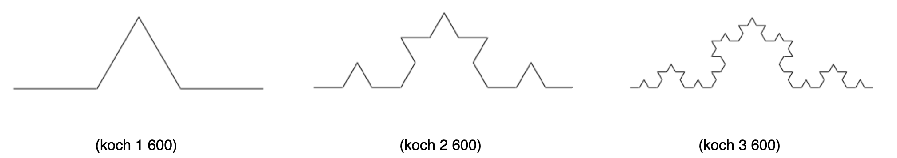
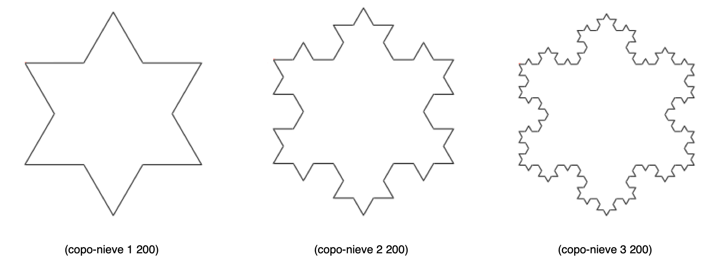
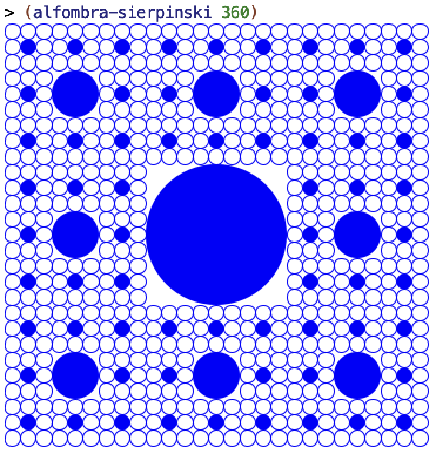

Práctica 6: Procedimientos recursivos e iterativos¶
Antes de la clase de prácticas¶
-
Los siguientes ejercicios están basados en los conceptos de teoría vistos la semana pasada. Antes de la clase de prácticas debes repasar todos los conceptos y probar en el DrRacket todos los ejemplos de los siguientes apartados del tema 3 Procedimientos recursivos:
- 1 El coste de la recursión
- 2 Procesos iterativos
- 3 Memoization
- 4 Figuras recursivas
Ejercicios¶
Descarga el fichero
lpp.rkt,
pulsando el botón derecho del ratón y seleccionando la opción Guardar
como lpp.rkt. Guárdalo en la misma carpeta en la que tengas el
fichero practica6.rkt.
El fichero contiene la definición de las funciones
(crea-diccionario), (put key value dic) y (get key dic),
necesarias para realizar una implementación de un algoritmo recursivo
con memoization y que necesitarás en el ejercicio 4.
Ejercicio 1¶
a) Implementa una versión recursiva iterativa de la función
(concat lista) que toma como argumento una lista de cadenas
y devuelve una cadena resultante de concatenar todas las palabras de
la lista.
La función concat deberá llamar a la función
concat-iter que es la que implementa propiamente la versión
iterativa usando recursión por la cola.
Ejemplo:
(concat '("hola" "y" "adiós")) ; ⇒ "holayadiós"
(concat-iter '("hola" "y" "adiós") "") ; ⇒ "holayadiós"
b) Define utilizando recursión por la cola la función (min-max
lista) que recibe una lista numérica y devuelve una pareja con el
mínimo y el máximo de sus elementos. La lista recibida como parámetro
tendrá como mínimo un elemento.
Ejemplo:
(min-max '(2 5 9 12 5 0 4)) ; ⇒ (0 . 12)
(min-max '(3 2 -8 4 10 0)) ; ⇒ (-8 . 10)
(min-max-iter '(5 9 12 -2 5 0 4) (cons 2 2)) ; ⇒ (-2 . 12)
Ejercicio 2¶
a) Implementa utilizando recursión por la cola las funciones
expande-pareja y expande-parejas de la práctica 4.
Ejemplo:
(expande-pareja (cons 'a 4)) ; ⇒ (a a a a)
(expande-parejas '(#t . 3) '("LPP" . 2) '(b . 4))
; ⇒ (#t #t #t "LPP" "LPP" b b b b)
b) Implementa utilizando recursión por la cola la función (rotar k
lista) que mueve k elementos de la cabeza de la lista al
final. No es necesario utilizar una función iterativa auxiliar,
puedes hacer que la propia función rotar sea iterativa usando el
parámetro lista como el parámetro donde acumular el resultado.
Ejemplo:
(rotar 4 '(a b c d e f g)) ; ⇒ (e f g a b c d)
Ejercicio 3¶
a) Implementa utilizando recursión por la cola la función
mi-foldl que haga lo mismo que la función de orden superior
foldl.
(mi-foldl string-append "****" '("hola" "que" "tal")) ⇒ "talquehola****"
(mi-foldl cons '() '(1 2 3 4)) ; ⇒ (4 3 2 1)
b) Existe un algoritmo eficiente para calcular el valor decimal de un número binario basado en usar de forma iterativa una multiplicación por 2. La idea es que si a un número binario le añadimos un dígito a su derecha, el valor del número resultante es el valor del número original multiplicado por 2 más el dígito que hemos añadido.
Por ejemplo, si tenemos el número 101, que es el número decimal 5, y
le añadimos un 1 a su derecha (obteniendo el 1011) el número
decimal resultante se obtendría multiplicando por 2 el número original
(5*2 = 10) y sumándole el 1 que hemos añadido (11).
De esta forma, podemos calcular de forma iterativa el valor decimal de un número binario haciendo esta operación con sus dígitos de izquierda a derecha. Deberíamos ir acumulando en un resultado el valor del número procesado y, en cada nuevo paso, multiplicar por 2 ese valor y sumar el valor del nuevo dígito que estamos procesando.
resultado nuevo = resultado anterior * 2 + nuevo bit
Supongamos el número binario anterior, el 1011. Veamos una traza de
cómo se obtendría el 11.
número nuevo resultado resultado
procesado bit anterior nuevo
=======================================================
1 0 0*2 + 1 = 1
1 0 1 1*2 + 0 = 2
10 1 2 2*2 + 1 = 5
101 1 5 5*2 + 1 = 11
1011 11
Implementa, usando el algoritmo anterior iterativo, la función
(binario-a-decimal lista-bits) que reciba una lista de bits que
representan un número en binario (el primer elemento será el bit más
significativo) y devuelva el número decimal equivalente.
(binario-a-decimal '(1 1 1 1)) ; ⇒ 15
(binario-a-decimal '(1 1 0)) ; ⇒ 6
(binario-a-decimal '(1 0)) ; ⇒ 2
Ejercicio 4¶
Realiza una implementación que utilice la técnica de la memoization del algoritmo que devuelve la serie de Pascal.
(define diccionario (crea-diccionario))
(pascal-memo 8 4 diccionario) ; ⇒ 70
(pascal-memo 40 20 diccionario) ; ⇒ 137846528820
Ejercicio 5¶
a) Usando la librería de imágenes de Racket 2htdp/image implementa
la figura recursiva conocida como curva de Koch. Debes definir una
función recursiva (koch nivel trazo) que dibuje una curva de Koch de
nivel nivel y de longitud trazo.
Como pista, fíjate en el dibujo. Para construir una imagen de una curva de Koch de nivel n y longitud l, se deberán juntar 4 curvas de Koch de nivel n-1 y longitud l/3. La primera y la última imagen son la curva original y la segunda y tercera están rotadas 60 grados. Fíjate también en la alineación de las imágenes.
Puedes ver ejemplos de las curvas de nivel 1, 2 y 3 en las siguientes figuras:

b) Usando la función anterior, implementa la función (copo-nieve
nivel trazo) que dibuje el copo de nieve de
Koch que puedes ver en
los siguientes ejemplos. Esta función no es recursiva, se construye
combinando tres veces la curva de Koch anterior.

Ejercicio 6¶
Define la función (alfombra-sierpinski tam) que construya la
alfombra de Sierpinski (una variante del triángulo de Sierpinski que
hemos visto en teoría) de lado tam píxeles.
En el caso base, cuando el tamaño sea menor que un umbral determinado,
se debe dibujar un círculo sin relleno de ancho tam. Fíjate que el
parámetro que se le pasa a la primitiva circle es el del radio
(lo puedes consultar
aquí),
por lo que para dibujar un círculo de ancho (diámetro) tam habrá que
llamar a la primitiva con el parámetro tam/2.
Por ejemplo, la llamada a (alfombra-sierpinski 360), poniendo como
umbral 20 píxeles, debe dibujar la siguiente figura:

Lenguajes y Paradigmas de Programación, curso 2022-23
© Departamento Ciencia de la Computación e Inteligencia Artificial, Universidad de Alicante
Domingo Gallardo, Cristina Pomares, Antonio Botía, Francisco Martínez